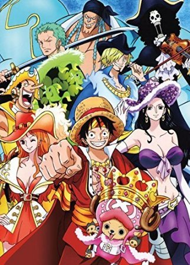

Summary:
Gol D. Roger was known as the Pirate King, the strongest and most infamous being to have sailed the Grand Line. The capture and death of Roger by the World Government brought a change throughout the world. His last words before his death revealed the location of the greatest treasure in the world, One Piece. It was this revelation that brought about the Grand Age of Pirates, men who dreamed of finding One Piece (which promises an unlimited amount of riches and fame), and quite possibly the most coveted of titles for the person who found it, the title of the Pirate King.Enter Monkey D. Luffy, a 17-year-old boy that defies your standard definition of a pirate. Rather than the popular persona of a wicked, hardened, toothless pirate who ransacks villages for fun, Luffy and his crews reason for being a pirate is one of pure wonder; the thought of an exciting adventure and meeting new and intriguing people, along with finding One Piece, are his reasons of becoming a pirate. Following in the footsteps of his childhood hero, Luffy and his crew travel across the Grand Line, experiencing crazy adventures, unveiling dark mysteries and battling strong enemies, all in order to reach One Piece.
Summary:
Doraemon is sent back in time by Nobita Nobi's great-great grandson Sewashi to correct Nobita's bad circumstances so that his descendants may have a better life in future. In the original timeline, Nobita experienced misery and misfortune throughout his life. In order to alter history and improve the Nobi family's financial status, Sewashi sent a robotic cat called Doraemon. In a typical chapter, Nobita comes home crying about a problem he faces in school and/or the local neighborhood. After hearing him out, Doraemon always offers helpful advice to his problem(s), but that's never enough for Nobita, who is consistently looking for the "quick, easy" way out (which offers insight to the viewers as to why Nobita's life turned out the way it did). Finally, after Nobita's pleading and/or goading, Doraemon pick a gadget or tool from a future department store out of his aforementioned pouch to help Nobita fix his problem, revenge, or flaunt to his friends. Nobita usually goes too far, despite Doraemon's best intentions and warnings, and gets into deeper trouble than before. However, by the end of the story, there is usually retribution to the characters who end up misusing them, and a moral is taught.